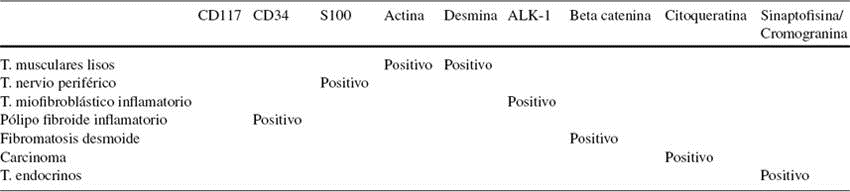
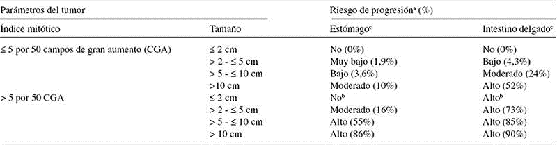

Tumores del estroma gastrointestinal

2.1 Epidemiología, aproximación diagnóstica y anatomía patológica
EVALUACIÓN DIAGNÓSTICA
Los GIST son los tumores mesenquimales más comunes originados en el tubo digestivo. Se definen como un tipo específico con una morfología característica, generalmente positivo para CD117 (c-kit), producidos/conducidos por mutaciones activantes de KIT o PDGFRA. También se describen raramente en localizaciones extraviscerales como epiplón, mesenterio, pelvis y retroperitoneo.
MACROSCÓPICO
Localizaciones más frecuentes
Estómago (60%), intestino delgado, yeyuno íleon (30%), duodeno (5%), recto (2- 3%) y colon (1- 2%). Son mucho menos frecuentes en esófago (< 1%). Algunos casos se presentan como tumores diseminados sin tumor primario conocido y un pequeño número de casos se originan en epiplón, mesenterio y retroperitoneo.
Las metástasis ganglionares son muy raras, suelen ser intra-abdominales en peritoneo e hígado.
Las metástasis a distancia son muy raras y suelen verse en piel, hueso y tejidos blandos; en pulmón son excepcionales y se suelen observar en casos rectales o muy avanzados.
Morfología
Su tamaño es variable (desde pocos mm hasta 38 cm). La mayoría mide unos 5 cm en el momento del diagnóstico. Típicamente se originan en la pared del tubo digestivo, pueden ser submucosos, intramurales o subserosos.
Frecuentemente ulceran la mucosa y raramente la invaden, lo que constituye un signo de mal pronóstico.
Por la importancia pronóstica de la localización es muy importante especificar lo más correctamente posible la situación anatómica del tumor. Suelen presentar áreas de hemorragia, necrosis y degeneración quística. Suelen ser únicos, aunque pueden ser múltiples de forma esporádica, en GIST familiar o asociados a neurofibromatosis y triada de Carney. Su crecimiento es expansivo (21%), pseudoexpansivo (45%) o infiltrativo (24%). Éstos dos últimos pueden ser los responsables de una resección incompleta cuando se realiza una enucleación.
Importante
El patólogo debe siempre referir en su informe el tamaño del tumor en tres dimensiones, la existencia de necrosis y su cuantificación y el estado de los márgenes y su distancia, ya que la resección incompleta se asocia a peor pronóstico.
MICROSCÓPICO
El aspecto microscópico es heterogéneo distinguiéndose tres tipos principales: de células fusiformes (77%), de células epitelioides (8%) y mixtos (15%).
Fusiformes
Los GIST fusiformes están formados por células alargadas de citoplasma pálido, eosinófilo y de aspecto fibrilar y sincitial, que se disponen en haces entrecruzados cortos o con patrón arremolinado. Pueden formar empalizadas nucleares; los núcleos son ovoides y los citoplasmas frecuentemente muestran vacuolas paranucleares.
Epitelioides
Los GIST epitelioides están formados por células de citoplasma eosinófi lo claro, con crecimiento difuso o formando nidos. A veces las células son vacuoladas y recuerdan a las células en anillo de sello de los carcinomas, mientras que en otras ocasiones son rabdoides o pequeñas.
El tipo epitelioide se observa más frecuentemente en estómago y epiplón.
Mixtos
Los GIST mixtos están formados por una mezcla de células epitelioides y fusiformes con una transición brusca de ambos tipos celulares o con un tercer tipo ovoideo intermedio.
La densidad celular es variable y el pleomorfismo por lo general poco marcado y focal. Raramente se observan formas pleomórficas o sarcomatosos con atipia difusa y mitosis numerosas, en estos casos se debe pensar primero en otros tipos tumorales.
El número de mitosis es muy variable, oscila entre 0 y más de 150 mitosis por 50 campos de gran aumento (cga).
La mayoría muestran índices mitóticos bajos o muy bajos (fi 5 mitosis/50 cga). Por la importancia pronóstica que tiene, debe normalizarse el procedimiento contando mitosis en las áreas más activas, en un total de 50 cga (que corresponden a 10 mm2). El criterio debe ser estricto obviando picnosis y cariorrexis. El índice mitótico debe ser gradado: bajo fi 5/50 cga y alto > 5/50 cga.
INMUNOHISTOQUÍMICA
Más del 95% de los GIST expresan CD117 (c-kit) con patrón de tinción citoplásmica difusa y más raramente de membrana, o en el aparato de Golgi. La tinción es de grado intenso en el 75% de los casos. El 70-90% expresan CD34, el 20-30% actina, el 8-10% proteína S-100 y el 2-4% desmina.
El estudio IHQ sirve por lo general para confirmar el diagnóstico de GIST y dada la repercusión en el diagnóstico es imprescindible una adecuada técnica inmunohistoquímica para CD117 con el fin de evitar errores.
Se recomiendan los anticuerpos policlonales sin desenmascaramiento antigénico. Como factores pronósticos se recomienda la realización de ki67. Puede incluirse el DOG1 en el panel inicial de forma optativa y muy recomendable en los casos c-kit negativos, ya que se expresa en más de un 35% de éstos.
DIAGNÓSTICO DIFERENCIAL
El principal diagnóstico diferencial de los GIST fusiformes es con tumores musculares lisos (leiomiomas y leiomiosarcomas); schwannoma y tumor maligno de vaina de nervio periférico; tumor miofibroblástico inflamatorio; tumor fibroso solitario; carcinoma sarcomatoide; pólipofibroide inflamatorio y la fibromatosis desmoide.
El diagnóstico diferencial de los GIST epitelioides es con carcinomas poco diferenciados; carcinomas endocrinos y con las variantes epitelioides del leiomiosarcoma y del tumor maligno de vaina de nervio periférico. Otro aspecto que destacar sobre todo en los casos con muestras pequeñas endoscópicas y cores, es con otras neoplasias que expresan kit como el melanoma, tumores de células germinales, angiosarcomas, sarcomas de Ewing, sarcomas granulocíticos y carcinomas indiferenciados de células pequeñas. Afortunadamente los rasgos morfológicos y un panel inmunohistoquímico adecuado permiten el diagnóstico (ver tabla).
Diagnóstico diferencial de los GIST
GIST kit negativos
No hay que olvidar que entre el 4 y el 5% de los GIST con morfología típica son negativos para c-kit. Se deben considerar como tal aquellos con tinción negativa o con tinción leve y menor del 10% de la extensión tumoral.
Los GIST c-kit negativos difieren de los positivos, en los rasgos clínicos, patológicos y genéticos. Aunque más frecuentemente localizados en estómago, se observan también en epiplón y superficie peritoneal. Suelen mostrar una morfología epitelioide pura o mixta (epitelioide y fusiforme). En cuanto a rasgos inmunohistoquímicos suelen ser menos frecuentemente positivos para CD34 y actina aunque curiosamente la expresión de desmina se aproxima al 30%, sobre todo en las lesiones de estómago y con morfología epiteliode.
En los casos c-kit negativos se ha observado positividad para DOG1 en un 39% de los tumores, y en la experiencia del GEIS en el 36% de 25 tumores. Otros anticuerpos como PCK tetha que es un marcador sensible para GIST, tienen un uso limitado por su baja especificidad y sensibilidad.
La inmunohistoquímica para PDGFRA se ha propuesto como marcador en los c-kit negativos con mutaciones en PDGFRA, pero con resultados poco reproducibles.
La mayoría de los GIST c-kit negativos son mutantes de la PDGFRA (80-32% según diferentes estudios), o KIT wild-type, con pocos casos con mutación de KIT. Las mutaciones de la PDGFR suelen afectar al exón 18.
RECOMENDACIONES FINALES
El diagnóstico patológico se basa en los rasgos microscópicos característicos más las técnicas auxiliares inmunohistoquímicas (CD-117, CD34, actina, desmina, proteína S-100 y ki-67 para valorar el índice proliferativo) que son muy importantes para confirmar el diagnóstico.
Por su importancia pronóstica el informe patológico debe incluir el tamaño del tumor, el número de mitosis por 50 campos de gran aumento (10 mm2) contadas en las áreas más activas y el estado de los bordes en las piezas quirúrgicas.
Los casos complejos o con rasgos inusuales es recomendable referirlos a los centros con experiencia.
En los tumores con morfología típica de GIST y falta de expresión de CD117 es obligado ampliar el fenotipo con DOG1 y analizar las mutaciones de los genes KIT o PDGFRA.
Es optativo, aunque conveniente, incluir el grupo de riesgo separado por localización (ver siguiente tabla) (Miettinen et al), y el grado histológico definido exclusivamente por el nº de mitosis (bajo grado fi 5/50 cga, alto grado > 5/50 cga).
Guías de valoración del riesgo de los tumores del estroma gastrointestinal primarios (GIST)
a. Definido como metástasis o muerte relacionada con el tumor.
b. Pequeño número de casos.
c. Para epiplón ver estómago y para otras localizaciones (esófago, colorrectal, peritoneo y mesenterio) ver intestino.